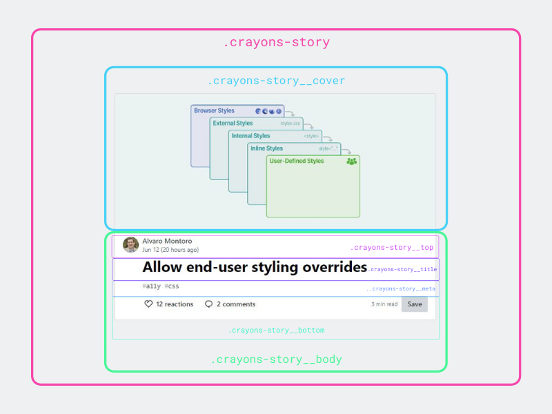

Quand j’ai débuté mon apprentissage du code en 2015, je suis tout de suite tombée sous le charme du langage CSS. C'était incroyable de pouvoir personnaliser des éléments aussi précisément et de voir le résultat en direct dans mon navigateur. C’était simple, ludique et intuitif.
À cette époque, je ne connaissais rien du "box-model", du positionnement, des flexbox, grid et autres propriétés plus poussées de CSS. Je travaillais un peu au petit bonheur la chance. J’ai rapidement compris que CSS était en réalité plus complexe qu’il n’y paraît. Connaître toutes les propriétés par cœur ne suffit pas. Si l’on souhaite produire un code propre et qui a du sens, il est fondamental d'utiliser des méthodes pour l'organiser.
Ce sentiment s'est renforcé dernièrement, alors que je travaillais avec CSS sur des projets variés. J’ai refondu mon portfolio avec React et lancé ce blog. Sur le plan professionnel également, j’ai été amenée à créer plusieurs sites dans le cadre de la crise sanitaire. Ces projets m’ont fait prendre conscience de mes limites en CSS.
Écrire du code CSS n’est pas difficile en soi. Mais écrire du CSS pour des projets volumineux, complexes et durables dans le temps est une autre paire de manches. Maintenir du code CSS est en effet une chose particulièrement ardue.
J’ai entrepris quelques recherches sur le sujet qui se sont avérées très enrichissantes. J’en partage aujourd’hui le fruit avec vous dans cet article. Voici donc 3 conseils pour vous aider à améliorer votre code CSS !
DRY = Don’t Repeat Yourself
Le DRY pour "Don’t Repeat Yourself", est un principe général du développement web qui s’applique à tous les autres langages. Comme cet acronyme le suggère, un code propre est un code qui minimise les répétitions.
Voici un exemple basé sur le framework CSS Bulma. Ici, nous avons créé une série de boutons ayant des caractéristiques communes (taille, coins arrondis, espacement, police…) mais des couleurs différentes. Pour des raisons de lisibilité, le bouton Warning a une couleur de police différente.
See the Pen CSS DRY button example by Pauline (@pompompolin)on CodePen.
Pour éviter les répétitions, nous avons créé une classe .button pour tous les boutons où nous définissons leurs propriétés communes. Ensuite, nous avons créé des classes propres à chaque type de bouton pour y définir leur couleur.
Pour le bouton Warning qui a une couleur de police différente, pas de problème, on peut très bien réécrire cette information "par dessus" .button, dans la classe .warning. Grâce à cette notation, on comprend aisément le rôle de chaque classe et à quels éléments en particulier elle fait référence.
Ce principe permet d’éviter les répétitions et réduit donc le nombre de ligne. On améliore ainsi la lisibilité du code mais aussi sa performance.
Adopter une méthodologie de nommage
Bien nommer ses sélecteurs est une part importante de CSS.
Il convient tout d’abord d’éviter l’utilisation de classes portant le nom d’éléments HTML ou ayant une valeur sémantique telles que .p, .header ou .footer. Ces classes ne permettent pas de comprendre à quoi elles font référence. Elles sont trop générales.
/* A éviter */
.p {
// propriétés
}
.header {
// propriétés
}
On préférera des classes avec des noms auto-descriptifs et lisibles. L’objectif est de pouvoir comprendre à quels éléments ils font référence au premier coup d’œil.
/* Bonne pratique */
.post-title {
// propriétés du titre de mon article
}
.post-paragraph {
// propriétés du texte de mon article
}
Les noms de classes doivent être faciles à comprendre et pas trop spécifiques. Ils doivent avoir un sens et faire référence à une fonction structurelle. À travers le nommage, on doit pouvoir facilement discerner la structure HTML sous-jacente, le rôle des classes CSS et la relation entre les deux. De cette façon, ces classes pourront être facilement réutilisables ailleurs sur le site, et pas seulement sur une page en particulier.
À noter qu’on écrit de préférence les classes en minuscules avec des tirets. Mieux vaut éviter le camelCase. Cette convention est basée sur l’écriture des propriétés elles-mêmes.
.postTitle {
// A éviter
}
.post-title {
// Bonne pratique
}
Revenons un instant sur notre exemple des boutons colorés.
See the Pen CSS DRY button example by Pauline (@pompompolin)on CodePen.
On constate que le nommage des classes propres à chaque bouton n’est pas basé sur leur couleur. Nous aurions pu écrire des classes telles que .red ou .blue. À la place, le nommage est basé sur le fonctionnement des boutons, celui-ci étant indépendant de la couleur. Ainsi, si un jour nous souhaitons faire passer les boutons .warning en orange, nous aurons juste à changer leur couleur dans le code CSS. Imaginez si nous avions mis des class="yellow" dans notre HTML, et que désormais les boutons étaient orange ? Ce n'est peut-être pas très grave, mais dans le cadre d'un projet plus important et collaboratif, cela aurait pu entraîner des confusions.
Appliquer la "modularisation" au CSS
Le CSS modulaire (Modular CSS) est un ensemble de principes permettant d’écrire du code performant et maintenable dans le temps.
Au lieu de coder son CSS avec une approche "top-down" à l'échelle de la page, le CSS modulaire propose de procéder à l’inverse. Il s’agit de décomposer une page web en éléments, eux-mêmes composés d'éléments, et ainsi de suite. Cela permet d’identifier les briques de code composant la page et plus généralement, le site. Cette approche est souvent comparée à la construction en Lego.
Par exemple, un extrait d’article de blog sur la page d’accueil d’un site web sera composé d’un titre, d’une date, d’un auteur, de tags, d’une description, etc. Ces éléments pourront éventuellement être réutilisés à d’autres endroits sur le site. Ils auront le même comportement et une mise en forme similaire.
Cette logique en composants a de nombreux bénéfices. Personnellement, je trouve que cela pousse à réfléchir à son code, à questionner la raison d’être de chaque classe. Cela permet également de "découpler" le code, c’est-à-dire à rendre indépendants tous les composants. Ainsi, on limite les risques d’avoir des sélecteurs qui se marchent sur les pieds, avec un code CSS qui fonctionne aléatoirement voire pas du tout.
Voici un exemple de modularisation d’un composant. Il s’agit d’un extrait d’article que j’ai pu trouver sur le site Dev.to.

On peut voir que l’élément .crayons-story représentant l’article est composé d’éléments enfants, eux-mêmes composés d’éléments enfants. Le nommage des classes permet d’identifier facilement la fonction de l’élément et ses liens avec les autres.
Aller plus loin avec les conventions de nommage
Pour aller encore plus loin, on peut utiliser une convention de nommage CSS. Il en existe de nombreuses, parmi elles, les méthodologies OOCSS, BEM, et SMACSS. Je ne vais pas rentrer dans les détails ici, mais je vais néanmoins vous présenter rapidement l'OOCSS que je trouve très intéressante.
L’OOCSS pour Object Oriented CSS, est une méthodologie créée par Nicole Sullivan en 2009 dans le cadre de son travail chez Yahoo. Le concept clé de l’OOCSS est de considérer les éléments comme des briques (ou objets) réutilisables dont l’apparence n’est pas déterminée par le contexte. En d’autres termes, ces objets sont des motifs visuels autonomes pouvant se résumer à un bout de code HTML, CSS et éventuellement JavaScript. Ces objets peuvent ainsi, et doivent, avoir la même apparence peu importe où ils sont placés sur le site.
L’OOCSS préconise également de ne pas utiliser d’IDs. D’une part parce qu’ils sont plus forts que les classes en termes de spécificité, et qu’ils risquent donc de créer des interférences dans le code et d'autre part parce qu’étant uniques, ils vont à l’encontre du principe fondateur de l’OOCSS, à savoir leur caractère réutilisable.
Mieux vaut donc utiliser des classes pour nommer ses objets. De cette façon, il est moins contraignant de faire évoluer son code HTML. On peut par exemple passer d’un h1 à un h3 sans avoir à changer l’organisation des balises.
Le chemin est long pour devenir pleinement maître de CSS ! J'espère que ces conseils vous seront utiles autant qu'ils le seront désormais pour moi. N'hésitez pas à me contacter via les commentaires ou Twitter si vous souhaitez en discuter.
Sources
- Scott Vandehey : What is modular CSS?
- Thibault Mahé sur 24 jours de web (2018) : CSS objet et CSS fonctionnel
- Robin Rendle sur CSS-tricks : What are CSS Modules and why do we need them?
- Cem Eygi sur freeCodeCamp : 7 Important Tips for Writing Better CSS
- Jonathan Z White sur freeCodeCamp : Leveling up in CSS
- Habdul Hazeez sur Dev.to : CSS Naming conventions